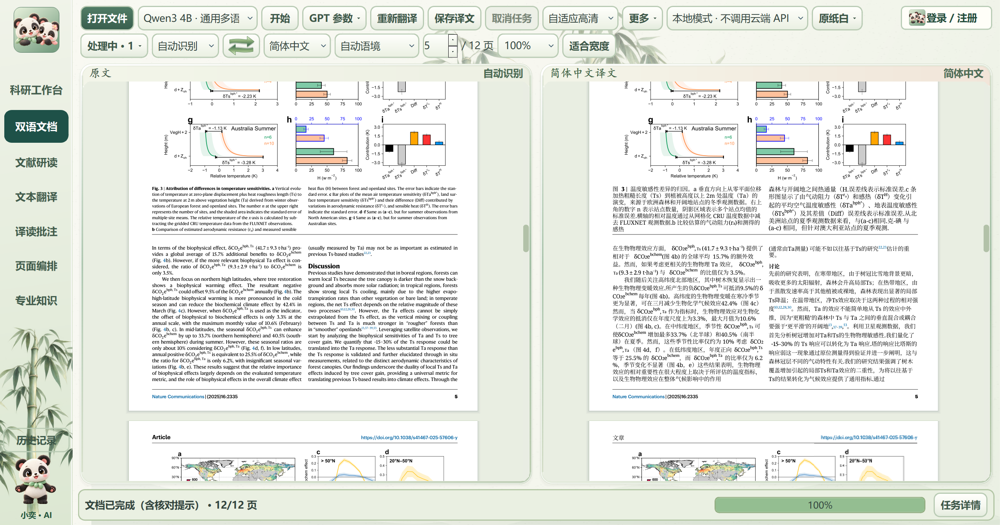
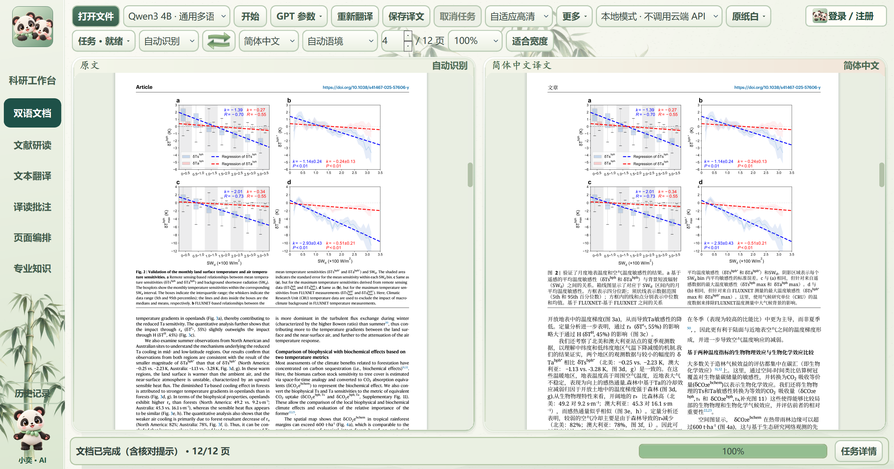
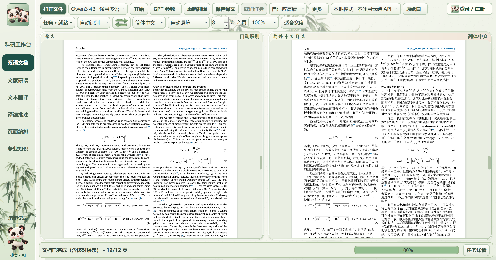

小奕译读项目网页整句保真，原生符号完整。
1.43.20 实机验证记录
本地Qwen，真实论文，实际安装后的客户端。翻译、排版和输出结果分别核验。
两篇论文的实际结果
| 样本 | 页数 | 回填区域 | 耗时 | 条件 |
|---|
| NG10 | 10/10 | 165/165 | 360.532秒 | 复用真实句子缓存 |
| NC12 | 12/12 | 113/113 | 1329.266秒 | 安装版新数据目录，未复制译文缓存 |
失败和等待均为0；实际PDF阻断问题为0。安装后的5027个生产文件逐个比对无差异；13组功能回归及27个原生符号组合用例通过。
12页首批译文预览：394.094秒。图内原文标签分别有38和21项核对提示。
完整去敏测试数据实际安装版页面

真实安装版客户端窗口；点击查看原始完整图片。
真实安装版客户端窗口；点击查看原始完整图片。
真实安装版客户端窗口；点击查看原始完整图片。论文：Yitao Li et al. (2025)，Observed different impacts of potential tree restoration on local surface and air temperature。CC BY 4.0；右栏为机器翻译改编。窗口截图像素未经修改。
功能介绍
- 双语文档
PDF、Word和图片导入；原文与译文并排、分步进度、中文及双语PDF导出。
- 正文与原生对象
正文优先11磅并在原页适配；表格、图名、脚注独立适配；保留原图、原生公式和上下标。密集正文以实际字形测量分配同栏空间。
- 完整性与恢复
逐句登记、数值与模型编号保护、原生对象数量与实际PDF核验；旧缓存重检，有限次数补译；未解决错误如实显示。
- 本地与在线通道
内置Qwen3 4B及CUDA/Vulkan运行资源；在线通道按用户实际账户和配置使用。本轮整篇验证使用本地CUDA。
- 阅读操作
原文和译文超链接、同步位置与缩放、鼠标中键拖动；F11专注阅读收起底部任务状态。
- 文献研读
原文、文献助手、选段译文三栏；默认约60%/22%/18%，保存个人栏宽、笔记和阅读位置。
- 专业知识
词性、读音、词形、搭配、语法、时态语态、双语例句和专业解释；按词项是否适用显示。
- AI与网页图文
分别保存词典、专业解释与示意内容；来源和模型结果分区；切换复用结果；完整图片窗口支持缩放、平移和适合窗口。
- 批注与编排
选字、高亮、笔记及页面导入、排序和导出；科研工作台保存项目、过程和结果。
- 账户与数据
本地访客使用不要求登录；账户中心提供实际已开通的登录与邮件能力；未开通的第三方或短信入口不伪装成可用。
- 轻量显示与保存
按需载入页面工具、后台渲染和异步数据库保存；阅读计时入队，数据库占用时保留待保存记录。
结果的适用范围
这些记录确认本轮样本、文件和流程的实际结果。自动检查不能认证每一句科学含义，不保证任意未来PDF无误。图像内文字、异常字体和扫描件仍需核对；本轮未新增在线知识与图像服务的付费内容测试。自适应检查使用受约束的规则、缓存与有限修复，不会自行训练权重或改写程序。
公开仓库提供说明、真实截图和去敏摘要；核心业务代码、个人资料及论文全文不公开。